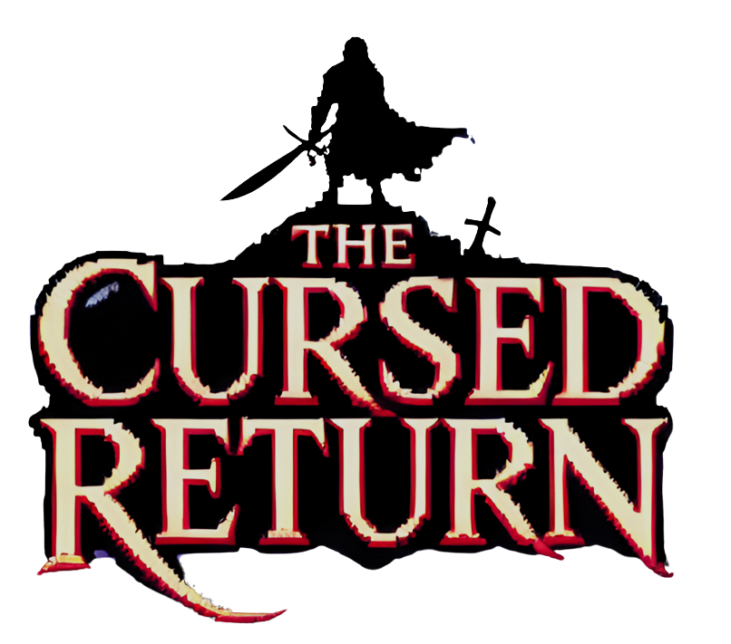

Créditos
Knight's Fall es un juego desarrollado por Middle Earth Studios.
Todos los derechos reservados © 2025.
Equipo de Desarrolladores
Santiago Coronado Hernández - A01785558
Enrique Antonio Pires Rodríguez - A01424547
Juan de Dios Gastélum Flores - A01784523
Diseño y Arte
El arte visual del juego fue creado a partir de diversas fuentes: generación de imágenes mediante inteligencia artificial, recursos de uso libre obtenidos en Freepik y múltiples librerías de sprites. El sprite principal del caballero y la princesa está basado en el personaje del juego Jump King.
Programación
El desarrollo de Knight's Fall se llevó a cabo utilizando HTML5 para el renderizado gráfico, JavaScript para la lógica del juego y CSS3 para los estilos y animaciones. El código está organizado en módulos y clases orientadas a objetos, lo que permite una estructura limpia y escalable.
Sonido y Música
8-Bit Fantasy & Adventure Music Pack por xDeviruchi
Disponible en: YouTube
Licenciada bajo https://creativecommons.org/licenses/by-sa/4.0/
Super Mario Land Ending SNES Remix (Super Mario World 16 Bit Soundfont)
por Bulby
Disponible en: YouTube
Todos los efectos de sonido fueron utilizados de freesound.org, por lo que son libres de uso y de licencia.
Agradecimientos
A nuestros profesores que nos dieron retroalimentación desde el inicio del desarrollo y a nuestros compañeros que probaron el juego durante sus diferentes fases y compartieron sus opiniones.
Por último, agradecemos al equipo de The Cursed Return por permitirnos usar un timer parecido a su maldición :p
